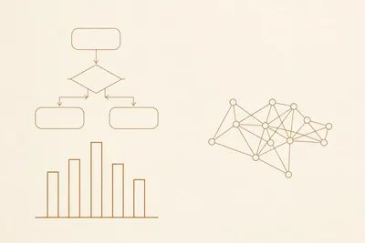
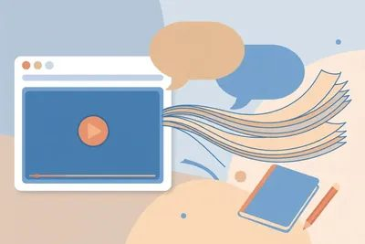
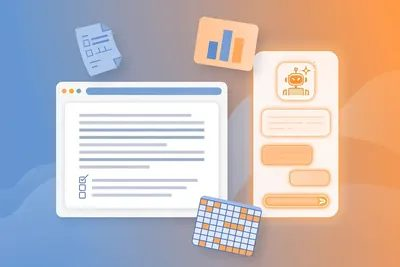
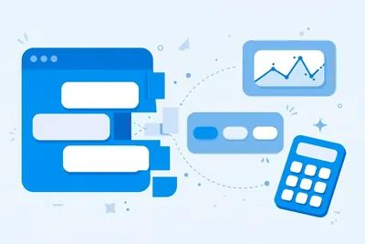
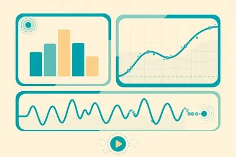
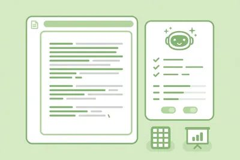

Opera 浏览器开始内置本地 AI：数据留在自己电脑上
Opera 在 10 月 27 日宣布，浏览器开始内置本地 AI 模型，首批以早期预览形式进入 Opera One，GX 和 Neon 随后跟进。这套功能叫 WebAI，模型跑在用户自己的电脑上，不用…
文档、表格、PPT、邮件：办公提效，少加班
Opera 在 10 月 27 日宣布，浏览器开始内置本地 AI 模型，首批以早期预览形式进入 Opera One，GX 和 Neon 随后跟进。这套功能叫 WebAI，模型跑在用户自己的电脑上，不用…
Opera 在 10 月 27 日宣布，浏览器开始内置本地 AI 模型，首批以早期预览形式进入 Opera One，GX 和 Neon 随后跟进。这套功能叫 WebAI，模型跑在用户自己的电脑上，不用把数据发到远端服务器。
对普通用户来说，好处有三点：不用为每个小功能单独开订阅；浏览器插件可以直接调用本地模型，比如给标签页分类、标记标题党、筛招聘信息；处理的内容留在本机，隐私边界更清楚。Opera 也提醒，本地模型不是万能的，大任务、联网查最新信息还是要走云端。
普通人怎么用：你现在就可以在 Opera One 里开早期预览试试，先从整理标签页、筛信息这类轻任务开始测。电脑配置一般也不用怕，模型就是冲着日常电脑设计的，跑不动再换回云端 AI，不亏。
Haosen 在 10 月 25 日的长文里点了一个常见毛病：文章写得很顺，读完记不住一句具体话。表现通常是三样凑齐：宏大开头、段段强调意义、结尾替读者总结一遍。他给的去 AI 味方法只有三步，顺序不…
Haosen 在 10 月 25 日的长文里点了一个常见毛病：文章写得很顺，读完记不住一句具体话。表现通常是三样凑齐：宏大开头、段段强调意义、结尾替读者总结一遍。他给的去 AI 味方法只有三步，顺序不能乱。
第一步先查清哪里不好读：让工具圈出具体句子，解释每处的问题，再决定改不改。正常术语、必要步骤、作者原来的语气不用为去味一律删掉。第二步改稿先保住事实：数字、引用、判断的轻重、原来的语气都不动，一次只用一套规则改一段，验过原意没变再处理全文。第三步让以后的稿子更接近自己的表达：别只写一句“自然一点”，把自己改过的前后版本留下来，让风格要求有实际依据。
长文还附了一份 22 个工具名的清单，分自查、检测、改写、文风校准几类，19 个给了具体 GitHub 实现。清单要用得小心两点：检测分数不能当成作者身份的判决；有 3 个工具作者明言只凭名称没法确认实现，只算检索线索，别照单安装。
普通人怎么用：下次改稿别直接让 AI 重写全文。先让它圈出有问题的句子并说明理由，你逐条点头后再改，改完对照原文核一遍数字和判断有没有走样。改过的前后版本存下来，下次直接拿它当风格样本，比空喊“自然一点”管用。

很多人让 AI 画流程图，拿到的是圆角方块大杂烩，发出去还得自己返工。有个开源项目把"审美"写成了 AI 能读懂的说明书。
很多人让 AI 画流程图，拿到的是圆角方块大杂烩，发出去还得自己返工。有个开源项目把"审美"写成了 AI 能读懂的说明书。
Diagram Design 是一个 Agent Skill（MIT 开源，GitHub 上已攒下数万 star），装进 Claude Code、Codex、Cursor、Copilot 这些编程助手就能用，安装就一行命令：`npx skills add cathrynlavery/diagram-design`。它内置 45 种图表类型——流程图、架构图、甘特图、雷达图、2x2 矩阵全有，输出是一个自带样式的单文件 HTML，浏览器打开就能看，不用装任何东西。
两个讨巧的设计：它能读你的网站，把品牌色和字体扒下来套进图里，图表和你家公众号一个味；还能把现有的 Mermaid、draw.io、Excalidraw 图重画成它的风格，一键导出 SVG/PNG 直接扔进 PPT。
用法一句话：在编程助手里装好技能，然后直接说"给我画一张××流程图，风格参考我们官网"，剩下的它来。
一个提醒：它吐的是渲染好的成品图，没有可编辑的源格式。频繁改动的文档配图，还是用 Mermaid 存文本版更合适，发布前再重画。
**普通人怎么用**：下次做方案 PPT 或公众号长图缺配图，别再去模板网站翻了。把内容描述清楚，让 AI 一次画好，省下的是改图的时间。
10 月 21 日，微软宣布：大众集团已经有超过 **33 万名**员工用上了 Microsoft Copilot。汽车厂的工人和管理层都在用 AI 办公，这事本身比参数发布更值得看。
10 月 21 日，微软宣布：大众集团已经有超过 **33 万名**员工用上了 Microsoft Copilot。汽车厂的工人和管理层都在用 AI 办公，这事本身比参数发布更值得看。
大众的路线分了三步，每一步普通人都能抄。第一步先给全员开聊天入口（Copilot Chat），月活冲到 30 万，先把"有问题问 AI"变成习惯；第二步上 Work IQ，把 AI 嵌进工程、生产、采购、销售这些真业务流程；第三步放开 Agent，全集团一个月里有 **2.6 万个**智能体在跑，替人干整段活。大众数据和 AI 负责人 Sophie Vassarotti 的话很直白：AI 的价值来自"在日常工作中大规模用起来"，不是摆几个试点。
**普通人怎么用**：别一上来就想着"AI 替我干完"。先固定一个高频场景（比如每天的邮件整理、会议纪要），用顺了再往第二个场景扩。想给团队或小公司推 AI 的，按"聊天→嵌流程→放 Agent"这个顺序走，阻力最小，效果也最实在。
Cloudflare 在 10 月 19 日推出了 Clairic，挂在 Workers AI 上预览，未来计划开放权重。它是个怪胎：大模型习惯一句话一句话往外写，它不写字，只返回值。
Cloudflare 在 10 月 19 日推出了 Clairic，挂在 Workers AI 上预览，未来计划开放权重。它是个怪胎：大模型习惯一句话一句话往外写，它不写字，只返回值。
它叫"提取模型"。你给一段文本加最多 4 张图，再列好字段类型，它直接回你类型化数据：数字、日期、时长、清单、估计值、预测值。发票的编号、金额、开票日期和到期日，一次请求全抽出来。不知道的字段不硬编，返回 null，外加一个"猜测值"告诉你它本来想填什么。估计类字段附中位数和 80% 预测区间。测试里，它对机场安检人数做了 21 天预测，平均误差 3.3%，17 天的真实值落在预测区间里。
价格很有杀气：每百万输入 token 0.10 美元，没有输出 token 费用——因为它根本不输出 token。官方称响应通常 1 秒内。
它和普通 LLM 不是替代关系，是流水线关系：Clairic 先抽数，Clef 这类决策模型做判断，最后 LLM 写回复文。发票识别、客服工单分拣、资料归档，这套组合比纯 LLM 又快又省。
普通人怎么用：做财务、采购、行政的，批量处理报销单、报价单、合同日期这类活，以前靠肉眼逐行看，现在丢给 Clairic 一次抽完。预览版免费，走 Cloudflare Workers AI 接入，先把你最烦的那类单据喂进去试一轮。
Notion 公开了一套新的代理执行架构，核心变化一句话：单个任务能连续跑超过 24 小时。过去的上限约 5 分钟，从分钟级直接跳到天级。
Notion 公开了一套新的代理执行架构，核心变化一句话：单个任务能连续跑超过 24 小时。过去的上限约 5 分钟，从分钟级直接跳到天级。
新架构给每个任务配了专属执行空间和任务队列，重启或遇到临时错误能自动续跑，不会从头再来。长对话会被压缩，大型工具输出另存，减少每次重新读取的数据量。配套的额度也定了：Business 和 Enterprise 方案每月含 1500 点 Standard 点数（Notion 自选模型）加 500 点 Select 点数（用户自选模型或自建代理）。新客户先适用，老客户 11 月 2 日转换。统一管理支出上限和权限的 AI Command Center 还在路上。
这意味着什么？过去 Agent 只能干"一次说完"的小活，现在可以接"通宵整理 500 条资料并逐条打标"这种大活了。重启续跑的机制很关键：长任务最怕中途崩一次全白干，它把断点续传做进了架构里。
普通人怎么用：Notion 付费用户可以换个用法了——把重复性强、耗时长的整理类工作直接丢给代理，第二天收结果。先拿一次性小任务试手感，确认它干得靠谱，再慢慢放大任务时长。成本是点数制的，大活开跑前先看清额度。
10 月 10 日，开源办公套件 ONLYOFFICE 推了秋季大更新 10.0，一口气加了约 50 项新功能、修了 1000 多个问题。核心变化是"编辑器里有了 AI"：文档、表格、演示、PDF 编…
10 月 10 日，开源办公套件 ONLYOFFICE 推了秋季大更新 10.0，一口气加了约 50 项新功能、修了 1000 多个问题。核心变化是"编辑器里有了 AI"：文档、表格、演示、PDF 编辑器都加了带上下文感知的 AI 工具，专属 AI 选项卡自带聊天，写内容、做摘要、翻译、清理数据、调格式，不用离开文件，也不用把内容复制到别处。
模型怎么接自己定：云用户通过 OpenRouter 启用，服务器部署可以接任意模型，包括本机跑的本地模型，敏感数据不出自己的基础设施。还新增了四个免费应用：AI Agents（带 MCP 服务器，做智能搜索和知识库）、Forms（收表和分析回复）、Files（集中存文档）、Rooms（安全协作和虚拟数据室）。PDF 编辑器加了元数据移除、表格自动识别、可复用签名；手机端 iOS/Android 免费版也带了 AI 助手，支持 Grok、DeepSeek，还能语音输入、表单自动填。
避坑点：桌面社区版的 AI 工具是以可选附加组件形式提供的，装完别忘了单独启用；云端走 OpenRouter 接模型可能会产生额外费用，免费额度用完再决定掏不掏钱。
普通人怎么用：受够 WPS 会员和 Office 订阅的，去官网下免费桌面版，先试"把这份合同摘要成三段话""这段翻成英文"这种日常活。顺手了，就把浏览器里那几个在线 AI 写作网站的书签删掉——本地这套不要钱、不上传。
用 Obsidian 写公众号的人都有这个痛：文章在 Obsidian 里写好了，还得复制到公众号编辑器，重新调标题、行距、引用和代码块，再单独做一张封面。同一篇东西，排版做两遍。
用 Obsidian 写公众号的人都有这个痛：文章在 Obsidian 里写好了，还得复制到公众号编辑器，重新调标题、行距、引用和代码块，再单独做一张封面。同一篇东西，排版做两遍。
向阳乔木（@vista8）新开源的 Obsidian 插件 Qiaomu Publish 就是解决这件事的：在 Obsidian 里写完，右边直接按公众号的样子实时预览，42 个内置主题随便换，正文、列表、引用、表格、代码一起变。调完排版，点一下就能把文章连封面一起发到公众号草稿箱；最终点发布还是在公众号后台手动完成，插件不代发。
几个实在的细节：没有配图的笔记会自动生成标题封面，文字、背景、字体都能调；技术文章的代码高亮、MathJax 公式、Mermaid 图会自动转成图片，不用手动截图；再次发送默认更新原来的草稿，不会越积越多。发草稿需要公众号的 AppID、AppSecret 和 IP 白名单，直连调不通的可以用作者提供的中转或自建桥接。
实话也说一句：作者帖子里写"发公众号、X、小红书"，但目前仓库 README 里只支持公众号草稿箱，X 和小红书还没影，别按三平台去理解。
这是他继"乔木剪藏"之后的又一个插件（昨天咱们介绍过剪藏那款），MIT 开源，目前 18 个 star，刚发布三周，算早期项目。
普通人怎么用：平时用 Obsidian 写东西、又发公众号的人，装上就能省掉"复制过去重排一遍"的功夫；不连公众号也能先用预览和排版功能。观望党可以等它再迭代几个版本。

X 博主向阳乔木（@vista8）10 月 15 日宣布，自己开发的音视频学习插件「乔木剪藏 · Obsidian + RSS」正式上架 Chrome 官方商店。
X 博主向阳乔木（@vista8）10 月 15 日宣布，自己开发的音视频学习插件「乔木剪藏 · Obsidian + RSS」正式上架 Chrome 官方商店。
它干三件事：YouTube、B 站、小宇宙、抖音、TikTok 的视频，一键字幕转写、视频下载、AI 总结。用法很顺手：在视频页面按三下 a 直接进入学习模式；看到有用的地方按三下 i，笔记自动存进 Obsidian。作者还提到插件支持翻译和 AI 对话，等于把"看视频—转文字—总结—记笔记"整条链路收进一个插件。
这类插件市面上不少，但多数只覆盖 YouTube，一家同时搞定 B 站、抖音、小宇宙，还直连 Obsidian 笔记的并不多。对中文学习者更友好：小宇宙的播客、B 站的长课都能转文字。
普通人怎么用：备考、学课、追行业播客的人，去 Chrome 商店搜"乔木剪藏"装上。下次看长视频先让它出 AI 总结判断值不值得看，值得看再细读转写文本，关键处按 iii 记笔记，笔记直接沉淀进你的 Obsidian 知识库。一套下来，2 小时网课压缩到 20 分钟抓重点。
GitHubDaily 10 月 14 日推荐了一个开源 Agent Skill「萝卜 PPT」（GitHub：zhouwei713/luobo-ppt），专治 AI 做 PPT 的老毛病：看着漂亮，…
GitHubDaily 10 月 14 日推荐了一个开源 Agent Skill「萝卜 PPT」（GitHub：zhouwei713/luobo-ppt），专治 AI 做 PPT 的老毛病：看着漂亮，一打开整页是张图片，错一个字都改不了。
萝卜 PPT 交出来的是能直接改字的原生 PPT。流程有讲究：你给它一篇文章、一份口播稿或一个题目，它先写一份只有标题的草稿请你确认——每页标题都是一句结论，还附口播备注，方向对了才往下做。手里有朴素 PPT 也能美化：丢一张参考图进去，配色、版式、图标、插画整体换一遍，原文一个字不动。
版式库覆盖时间线、漏斗、2x2 矩阵、SWOT、波特五力这些常用结构；表格是真表格，图表双击就能改数据；内置 14 套风格。理科老师会喜欢一个细节：原稿里用公式编辑器打的公式，换软件打开常变空白，它会转成普通文字公式保下来。没配生图模型也能用，背景和插画有程序化画法。
普通人怎么用：用 Claude Code 或 Codex 的人，把仓库装进 Agent 的 skills 目录。下次做工作汇报、课件、公众号配套讲解，先让它出标题草稿——这一步是精髓，标题即结论的 PPT，逻辑很少会散。
AI 办公助手最大的毛病，是"只动嘴不动手"：你让它做一份季度汇报 PPT，它给你一段"制作计划"，文件影子都没有。10 月 12 日被 GitHubDaily 在 X 上推荐的 OpenWorkBu…
AI 办公助手最大的毛病，是"只动嘴不动手"：你让它做一份季度汇报 PPT，它给你一段"制作计划"，文件影子都没有。10 月 12 日被 GitHubDaily 在 X 上推荐的 OpenWorkBuddy，就是冲着这个毛病来的——而且是国人开源项目。
它的合同写得很硬：你说一句话，它规划、调用工具，最后交到你手里的必须是磁盘上真实存在的 **.pptx / .docx / .xlsx / HTML 文件**。最绝的是交付校验：模型说"文件做好了"不算数，程序会去磁盘上验货，文件不存在就打回重做。被 AI"画饼"坑过的人，看到这条会会心一笑。
用法也对普通人友好：模型随便换，DeepSeek、Qwen、GLM、Kimi、OpenRouter、本地 Ollama 一键切换；装了 Claude Code 或 Codex 的电脑，可以直接拿它们当引擎，省下一份 token 钱。会话、文件、API key 默认全留本地。
授权是 PolyForm 非商业 1.0：个人、学习、非营利用免费，商用要另外谈。项目 10 月 8 日还在更新 changelog，活着的。
普通人怎么用：做汇报 PPT、把一堆材料转成文档、定时收行业资讯推到飞书，这种活可以直接扔给它。先从"这份表格帮我做成汇报 PPT"这种具体任务试起，别一上来就考它写年终总结。

ONLYOFFICE 10 月 10 日发布 10.0 大版本，一次带来约 50 个新功能、1000 多处修复。最核心的变化就一句：文档、表格、幻灯片、PDF 四个编辑器里都长出了 AI 标签页，内置…
ONLYOFFICE 10 月 10 日发布 10.0 大版本，一次带来约 50 个新功能、1000 多处修复。最核心的变化就一句：文档、表格、幻灯片、PDF 四个编辑器里都长出了 AI 标签页，内置聊天框，起草、总结、翻译、清洗、排版都不用跳出文件。
预设提示词、自定义 AI 动作、助手和收藏提示词都配齐了。法务拿它总结合同，分析师让它生成预测和数据透视表，管理者把零散想法变成结构化演示稿，场景都给好了。
模型自己选：云用户走 OpenRouter 接入，私有部署可以接任意模型，包括本地模型，敏感数据不出内网。另外还附带 4 个免费模块化应用（AGPL v3 开源协议）：AI Agents（MCP 驱动的智能搜索和知识库）、Forms（表单收集与分析）、Files（文档存储与权限）、Rooms（安全协作与虚拟数据室）。云版默认开启，服务器版一条命令装好。PDF 编辑器加了元数据清除、表格自动识别和可复用签名。
价格：软件本身免费开源，AI 花费取决于你接的模型，OpenRouter 上有免费额度模型可用。适合不想续费 Microsoft 365、又在意数据不出境的团队和个人。
避坑：免费版不自带大模型，AI 标签页装好后是空的，得自己连模型；中文长文档总结先拿小文件试效果，别一上来就丢几十页的合同。
普通人怎么用：去官网下桌面版或开云版，打开 AI 标签页连一个免费模型，先从"总结这份合同的重点""把这段翻成英文"开始试，顺手了再玩自定义动作。
Anthropic 10 月 6 日把 Claude for Google Workspace 推成公开测试版，所有付费 Claude 订阅（Pro、Max、Team、Enterprise）都能用。在…
Anthropic 10 月 6 日把 Claude for Google Workspace 推成公开测试版，所有付费 Claude 订阅（Pro、Max、Team、Enterprise）都能用。在 Google Workspace 应用市场装好插件，从"扩展程序 > Claude > 打开 Claude"调出侧边栏，Claude 就坐在文档旁边干活。
Docs 里选中一段别扭的文字，让它润色语气、重写长段落、修语法，版式字体不动；大改会变成建议卡片，一条条点接受或拒绝。Sheets 里它能写嵌套公式、搭数据透视表、画原生图表，脏数据还能丢进 Python 环境洗干净再写回表格。Slides 里按现有主题的版式生成新页，还会自查文字重叠、颜色看不清这类毛病。怕它乱改就开"修改前先问我"，想省事就切"全部自动执行"。
反过来也行：在 Claude 聊天框里直接粘文档链接，或者让它新建文档，读写删都走你原来的谷歌分享权限。
价格：需要 Claude 付费订阅，插件本身不额外收费；Team 和 Enterprise 要管理员先开连接器。
避坑：测试版，忙文件里先核对结果；它默认要读写删全套权限，重要文件一定开"修改前先问我"，别图省事。
普通人怎么用：装好插件后，先拿周报练手——"把这段改得更简洁"，再让 Sheets 给你写个透视表公式。以前在两个标签页之间复制粘贴的时间，现在省下来了。
谷歌云在 10 月 8 日的 Gemini at Work 活动上推出 Gemini 智能体，入口只有一个对话框。用户交代目标就行，比如把上季度销售做成汇报，智能体自己拆步骤、选模型、连公司系统，最后…
谷歌云在 10 月 8 日的 Gemini at Work 活动上推出 Gemini 智能体，入口只有一个对话框。用户交代目标就行，比如把上季度销售做成汇报，智能体自己拆步骤、选模型、连公司系统，最后把成品交回来。它能在 Gmail、Drive、Docs、Sheets、Calendar 里干活，也能连 Slack、Jira、Salesforce 和各类数据库。
和普通聊天机器人不一样的地方有三处。一是能长时间跑，任务在云端接着执行，人合上电脑也不停。二是能临时拉起几个子智能体分工，每个子智能体有自己的身份和权限。三是企业版的协作者智能体直接配了邮箱、日历和网盘账号，同事在文档里 @ 它就能派活，改动会记在它自己名下，方便追责。花钱也有刹车：管理员可以给项目设硬上限，超了就自动暂停。模型不只用谷歌自家的，还能调度 Anthropic 的 Claude。
金融和法律行业版在预览，政府、医疗、零售版未上线，单独定价未公布。团队别急着全公司铺开。
普通人怎么用：在 Workspace 里先挑一件跨应用的杂活试，比如让它汇总邮件和表格再生成一页汇报，盯着日志看它碰了哪些数据。权限和预算帽确认没问题，再把例行周报这类活交给它。

OpenAI 10 月 7 日开始推送 GPT-6。付费用户（Plus、Pro、Business、Enterprise）先用 GPT-6 Sol，免费版和 Go 用户从 10 月 8 日起换成 GPT…
OpenAI 10 月 7 日开始推送 GPT-6。付费用户（Plus、Pro、Business、Enterprise）先用 GPT-6 Sol，免费版和 Go 用户从 10 月 8 日起换成 GPT-6 Luna。Work 和 Codex 的模型这次不动。
真正能感受到的变化，叫 Intelligent UI。模型会自己判断：该说文字就说文字；该上图的时候，直接在对话里生成可点的图、对比表、地图，甚至一个小计算器。举例说，你让它帮忙分账，它能当场做出一个可拖动的分账工具；你问自行车怎么变速，它能把零件拆开点着看。用户也可以手动要求少放一点图。
普通人怎么用：先打开 ChatGPT 问一个需要算账或对比的问题，比如“帮我算两个人分摊房租水电”，看它会不会直接给你可操作的工具。比起纯文字，省去了自己再去找小工具的步骤。注意，这是分批推送，账号没更新就等几天，不用反复刷新。

Anthropic 10 月 8 日发布两个测试版工具：Claude Dashboards 和 Claude Motion。Dashboards 接公司的数据仓库和 Salesforce，用户用一句大…
Anthropic 10 月 8 日发布两个测试版工具：Claude Dashboards 和 Claude Motion。Dashboards 接公司的数据仓库和 Salesforce，用户用一句大白话提问，Claude 就搭一个会自己刷新的看板。每个数字背后用了什么查询，你都能点开核对，看板上也标着数据最后更新时间。
Motion 走的是代码动画路线。你给出文字、表格和图片，它写代码把这些材料动起来，导出 MP4。数字写错了，不用重新生成视频，直接改数字或改一句话就行。Motion 目前只对 Team 和 Enterprise 开放；Dashboards 面向付费计划。Claude 的 Docs、Slides、Design 同时转正，所有计划（包括免费版）都能用。
避坑提醒：两个新工具都没有公布准确率数据，拿来做汇报草稿可以，正式对外发数之前，查询口径仍要人工复核一遍。
普通人怎么用：有 Claude 付费版的话，先拿一份现成表格让它做个趋势看板练手，确认数字对得上，再考虑接正式数据源。
微软在 10 月 7 日的发布会上说，GitHub Copilot 本月底前支持本地模型推理。写代码的时候，系统可以自动决定走云端大模型还是走电脑本地模型，你也可以在 VS Code、Copilot …
微软在 10 月 7 日的发布会上说，GitHub Copilot 本月底前支持本地模型推理。写代码的时候，系统可以自动决定走云端大模型还是走电脑本地模型，你也可以在 VS Code、Copilot CLI 里手动锁死一种。
本地这边，微软推了 MAI Code 1.1 Flash，总参数 1370 亿、实际激活 68 亿，走 Windows ML 就能跑。官方称在 Surface Laptop Ultra 上，2K 到 256K 长度的提示词，解码速度约每秒 **40 至 63** 个词元。开发者也可以挂自己兼容 OpenAI 接口的本地端点。
为什么有用：代码不方便出公司网络的团队，敏感片段可以在本地处理；普通改错、补全这种小活走本地，速度快还省钱；复杂重构再切回云端。缺点也明显：本地效果取决于电脑配置，老机器跑起来可能会卡。
普通人怎么用：如果你用 VS Code 写代码或写脚本，本月底更新后去设置里找 Copilot 的模型选择，先选自动模式跑一周，体感一下本地和云端的差异，再决定要不要常开本地。

开源办公套件 ONLYOFFICE 在 10 月 8 日发布 10.0，文档、表格、演示和 PDF 编辑器里都多了一个 AI 标签页。人在文件里就能让 AI 写草稿、做摘要、翻译和整理格式，不用来回复…
开源办公套件 ONLYOFFICE 在 10 月 8 日发布 10.0，文档、表格、演示和 PDF 编辑器里都多了一个 AI 标签页。人在文件里就能让 AI 写草稿、做摘要、翻译和整理格式，不用来回复制到另一个聊天窗口。
这版还有四个免费模块：AI Agents 负责智能搜索和个人知识库，Forms 管表单收集，Files 管文件权限，Rooms 做带保密的协作空间。企业可以自己挑模型：云端版通过 OpenRouter 接入，私有部署能接本地模型，敏感文件就能不出公司内网。本次号称有约 50 项新功能和上千项修复。
适合谁：不想把合同和报价单往公网 AI 里贴的小团队，还有已经在用 ONLYOFFICE 的单位。个人用户图省事，也可以用它处理长文档摘要。
普通人怎么用：先在 ONLYOFFICE 里打开一份长合同或方案，用 AI 标签页的摘要试一次，对照原文检查数字有没有抄错。确认稳定了，再把翻译、排版这类重复活交给它。
打字慢、懒得打字的人，又多了个选择。Aqua Voice 10 月 6 日把它的 AI 语音输入应用搬上了安卓，至此 Mac、Windows、iPhone、安卓四个平台齐了。用法很简单：任意 App …
打字慢、懒得打字的人，又多了个选择。Aqua Voice 10 月 6 日把它的 AI 语音输入应用搬上了安卓，至此 Mac、Windows、iPhone、安卓四个平台齐了。用法很简单：任意 App 里点一下悬浮按钮开口说话，它把语音直接变成排好版、带标点的文字，填进你正在输入的框里，微信回复、邮件、记笔记、给 AI 写提示词都行，不用切换键盘，也不用复制粘贴。想改稿也不用动手重打：选中一段文字点 Edit，说一句「改成列表」或者「缩短一点」，它当场改好。
背后的识别模型叫 Avalon 1.5，官方给的词错率是 **5.55%**。一个第三方对比里，同一段话苹果自带听写错了 17 处，它错了 1 处（这是厂商引用的测试结果，听听就好，自己试过才算数）。它支持 **49 种语言**听写，一个账号全平台通用，自定义词典和替换规则能跨设备同步。
价格方面：前 **1000 个词免费**，之后走 Pro 或 Max 订阅，老用户在安卓上登录原账号不用再付一份钱。安卓 10 以上就能装。
避坑提醒：语音转文字再准，也怕环境吵和口音重，重要消息发出去前请扫一眼再点发送；它有不存转录记录的隐私模式，在意隐私的人记得打开。
普通人怎么用：先拿免费额度试三天，专门用在回长消息和写提纲上——说话比打字快两三倍，这个差距试一次就有感觉，尤其适合不爱打字的长辈。
天天用 Gemini 的人都有个烦恼：同一套要求，每次都要重新打一遍。"用我的写作风格写""按上次的汇报格式来""每次给三个角度"——这种话一天能说八遍。
天天用 Gemini 的人都有个烦恼：同一套要求，每次都要重新打一遍。"用我的写作风格写""按上次的汇报格式来""每次给三个角度"——这种话一天能说八遍。
10 月 1 日，Google 在官方博客推了个新功能 Skills，专门治这个毛病。你把常用的指令存成一个 Skill，之后在输入框敲个 **"/"**，点一下技能名，Gemini 就按你的老规矩开工，不用再复述。
更省事的是，Gemini 会自己发现你"又在重复"。它能从聊天记录里看出你某句话说了好几次，主动问你要不要存成 Skill。多个 Skill 还能叠着用，比如"我的写作风格"加"品牌规范"，一次调用，两份要求全生效。Skill 里还能塞参考文件，txt、PDF、图片都行。
免费用户和付费用户都有，全球推送。Workspace 的用户再等几周。
但要注意两件事。第一，它在取代老功能 Gems：个人账户的 Gems 今年 **11 月**起退场，商业和企业账户 **2027 年 3 月**，教育账户 **2027 年 6 月**。你的老 Gems 会自动转成草稿版 Skill，数据不会丢。第二，Gemini App 里建的 Skill 和 Workspace 里建的不互通，两边都要用的人，得分别建一遍。
普通人怎么用：请先把每天重复的要求存成 Skill——日报周报的固定格式、公众号的固定排版、做方案的固定模板。从今天起，重复的话只说一次。